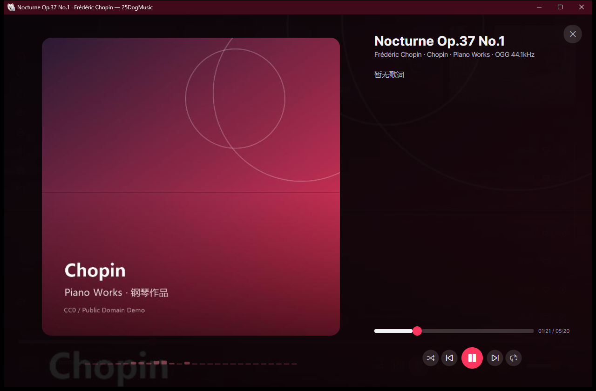

为飞牛 NAS 打造的
桌面音乐客户端
浏览、搜索、播放与歌词一体化。深色界面、封面取色、实时频谱与桌面歌词浮窗，让曲库听感更完整。

曲库浏览到播放，一应俱全
围绕 NAS 音乐库的日常使用场景设计：分类浏览、快速搜索、队列播放与歌词同步。
分类浏览
专辑、歌手、风格、文件夹、收藏与最近播放，滚动到底自动加载下一页。
分类搜索
歌曲 / 专辑 / 歌手 / 歌单以 Tab 分栏展示，各自独立滚动分页。
播放与队列
全屏播放页、播放队列侧边抽屉，支持从歌单直接勾选添加歌曲。
实时频谱
基于 WASAPI 环回采集的频谱可视化，跟随播放起伏并内置均衡器预设。
桌面歌词
可拖动的置顶歌词浮窗，仅在当前曲目有歌词时出现，切歌自动收起。
漫游发现
随机漫游曲库，下方展示漫游队列卡片，点击即可切换当前曲目。
原生观感
Windows 11 云母材质与圆角、覆盖取色的沉浸背景，Windows 10 亦有适配。
后台播放
关闭窗口后可继续播放并驻留托盘，随时呼出控制。
设置与关于
账号连接、外观、音质与播放分组配置；关于页展示版本说明并支持检查更新。
技术栈
跨平台 UI 框架 + 原生音视频内核，Release 使用 NativeAOT 编译为独立可执行文件。
本地构建
需要 .NET 10 SDK；桌面客户端启动后填写飞牛 NAS 地址并登录即可使用，登录信息只保存在本机。
每次推送到 main 会自动构建；推送 v* 标签则会触发 AOT 发布并创建 GitHub Release，
同时产出 Windows zip / 安装包、Linux tar.gz 与 macOS zip。版本号由标签注入，显示在「关于」页。
发布包按白名单只保留音频相关的 VLC 插件，登录信息与播放偏好保存在本机
%LOCALAPPDATA%\25DogMusic\config.json（macOS / Linux 为对应应用数据目录），程序本身不内置任何服务器地址。